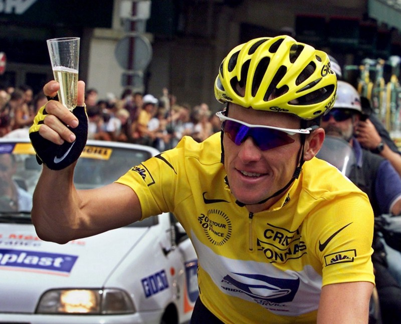

Perfomance Enhancing Breakfast
Posted on Sat 01 March 2014 in Productivity

As Lance Armstrong has shown the world, putting the right thing into your body can greatly improve performance, I myself have been looking into more maintainable alternative. More and more I'm experimenting with diet as a means to improve my mental performance as well as my running ability week on week. Specifically ways of optimising the meals I'm taking in and turning them into more efficient forms of food consumption. Looking into my diet was partially kicked off by my recent foray into fasting and also looking at the spectacular popularity of the soylent project.
Where I was
With this in mind I did a little research into how I could turn breakfast into a more efficient starter meal for the day. Generally I never eat breakfast, so this seemed like a good place to experiment. The only breakfast I ever tended to eat was oats, which generally caused me to feel incredibly hungry long before lunch time, presumably as my stomach had woken up. I needed a breakfast that was going to solve a few problems.
The checklist
- It needed to be fast to make and eat. I generally have a pretty rigid morning routine and I wanted to ensure that if I was going to add in a meal, it would consume too much time.
- It needed to stave off hunger till lunch-time. This was always an on-going pain point for me, so satiety over time way important.
- Supplied my body with materials I needed that complimented my diet. I'm a vegetarian, so protein and iron are a good bet.
- Was reasonably cost effective if I'm going to be eating it everyday.
- Didn't taste like death. (Optional, but preferable). I've done beetroot juicing before and I still shudder at the thought of drinking that first thing in the morning.
- Can be bought in bulk and be stored for a month-long period.
After doing some rudimentary research it because pretty obvious that I would need something smoothie-based to tackle all the requirements of the checklist.
Recipe
- Almond Milk-Lactose free, naturally high in anti-oxidants and minerals. Also provides a drinkable texture.
- Frozen Fruit-Can be bought in bulk and lasts quite a while. High in vitamins, minerals and antioxidants. Improves taste. I alternate a few ranges of frozen fruit so the specific vitamins and minerals vary.
- Goji Berries-Vitamin A and antioxidants.
- Oats-High in fiber and antioxidants. Adds satiety
- Frozen Spinach-Vitamin A and C and Iron.
- Whey Powder-I opted for a strawberry flavoured one for taste. High in protein and BCAAs.
- 2 Bananas-High in fibre and Potassium. Adds satiety
Generally all of these ingredients are also low in fat.
Results
- Around 5 minutes to make/clean up after. Once it's made I go through my normal routines drinking the smoothie without any time affect.
- Once I added in the oats it seemed to supply enough to stave off hunger easily till lunch time. It also seems to be one of the only sources of food I can eat post-run that will completely stave off hunger.
- Protein and Iron are sorted as well as a ton of vitamins and minerals. The BCAAs are hopefully also helping build up lean muscle while I'm training.
- Initial cost of ingredients including a cheap blender was about £50 so not too bad really. Total cost per week never generally goes above £20.
- Tastes really good actually. The frozen fruit/veg keep the temperature down so it's fruit and cold.
- All but the bananas meet this requirement. I go through a fair bit of almond milk too so I generally need to buy both on a weekly basis, which isn't too much of a pain point.
I've found that there is a significant difference between days when I have the smoothie and days when I don't. It's not the same as say drinking a coffee, presumably as the effects are more slow burning but my cognitive ability is definitely higher. As I'm coding each morning I can generally work out when my brain is hitting limits holding abstract entities in my head or when I'm in a flow of productivity or not and I was doing a rough rating each day and put simply, that rating has only improved. So for me that's my measure of cognitive ability, it may be different for you.
What I've learned overall is that food is pretty cool and looking into the specific benefits of the food I'm eating is unsurprisingly interesting. For me though, the simple fact that changing my diet from nothing(or maybe a coffee and occasional croissant) to an uber healthy food source makes my brain work better is pretty incredible. You see the benefits on paper but until you give it a measurable test you can't really appreciate it. Give it(or your own version) a go, let me know how you find it!